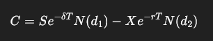

Week 10 – Real Options & Limitations of DCF (ECOM118)
Return to Home
What is the main limitation of DCF?
It assumes fixed cash flows, no flexibility, and no value in timing decisions.
Why is DCF not always realistic?
Because in reality, conditions change and firms can adapt decisions over time.
What is meant by "reality is binomial"?
Some outcomes are all or nothing—like a drug passing or failing approval in pharma.
What is irreversibility in investment?
Once you invest, you can't get the money back. There's a cost to acting too early.
When is it okay to invest immediately?
If there's no uncertainty, no flexibility, and no downside to investing right away.
What are the types of real options?
Options to defer, expand, abandon, switch, or stage investments (time-to-build).
What is an investment project compared to?
A call option – the right but not obligation to invest when the value is right.
How does deferring a project add value?
It allows the firm to avoid losses or wait for better conditions, adding €0.7mn in value in the example.
How is NPV calculated in this context?
NPV = (3 / (0.10 - 0.02)) - 35 = €2.5 million, using perpetuity with growth.
Why does NPV undervalue the project?
Because it ignores timing and flexibility. Real option value was €5.4mn.
How much value does NPV capture vs real options?
Only 46% – calculated as 2.5 / 5.4 = 46%
Why might firms use simpler models?
A well-built binomial model can be easier to understand and still accurate enough.
What is the investment value formula from Dixit & Pindyck (1994)?
F(V) = (V* − K)·(V / V*)^β if V < V*;
F(V) = V − K if V ≥ V*
What is the formula for the trigger value V*?
V* = (β / (β − 1)) × K
Where β adjusts for risk and timing flexibility
What is the Black-Scholes (1973) call option formula?
